- Web Publisher / Front End Developer
- 1996.05.07
- 7applejink@gmail.com
- 010-7550-6728
- 사용 기술
- HTML5, CSS3(SASS, LESS), JavaScript, jQuery,
비동기처리(JSON/AJAX),반응형 Framework(Bootstrap), CMS(WordPress), PHP, MySQL, Adobe Photoshop, Github


xhtml 로 제작된 기존 사이트의 전체적으로 올드한 디자인과 Interface를 문제점으로 삼아 트렌드에 맞는 UI와 웹 표준을 지향하는 마크업으로 접근성을 고려하여 새롭게 구축하였습니다.

메인화면에서 사용자가 원하는 경험을 중심으로 퀵메뉴를 구분하고, 컨텐츠의 기능과 성격에 맞춰 위계를 재정렬한 모바일 버전입니다.
 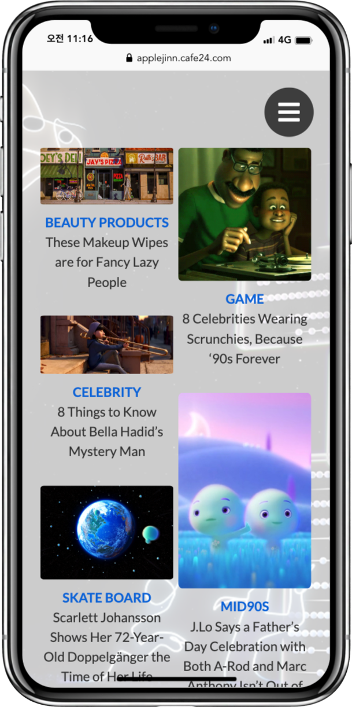
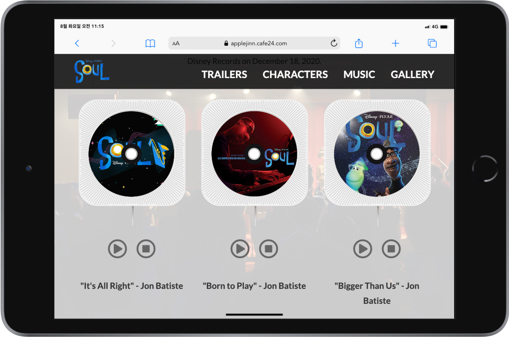
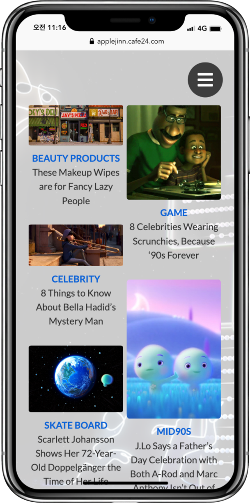
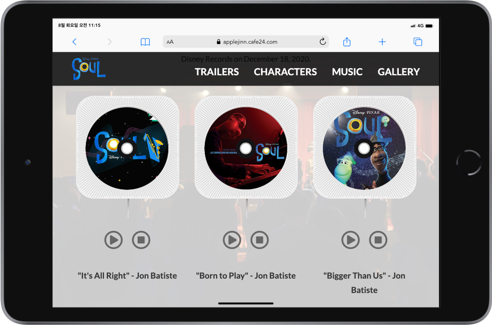
영화 "SOUL"을 주제로 한 사이트로써, 다양한 디바이스에서 폭 넓게 이용할 수 있도록 반응형 웹을 구축하였습니다.
 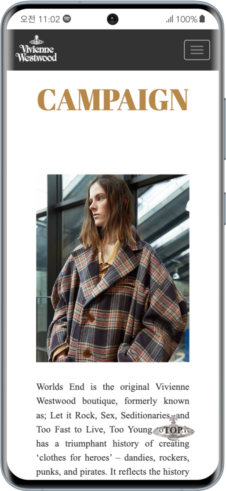
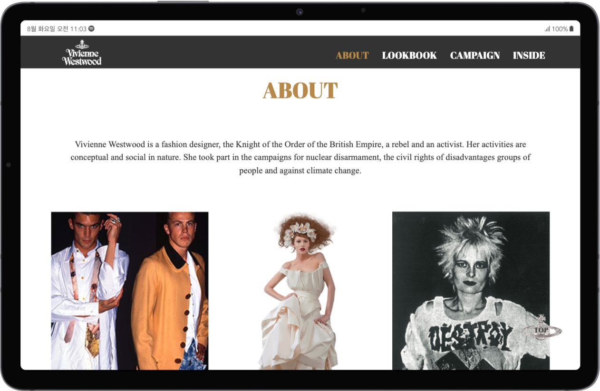
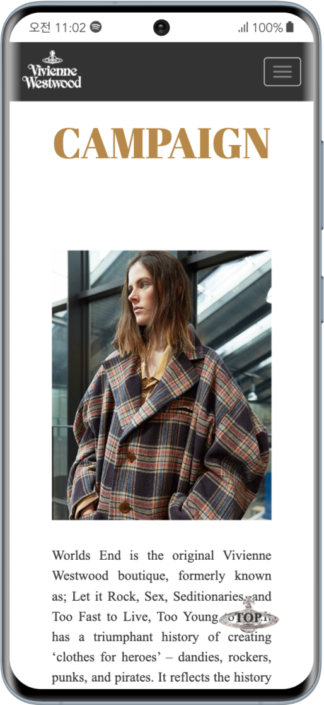
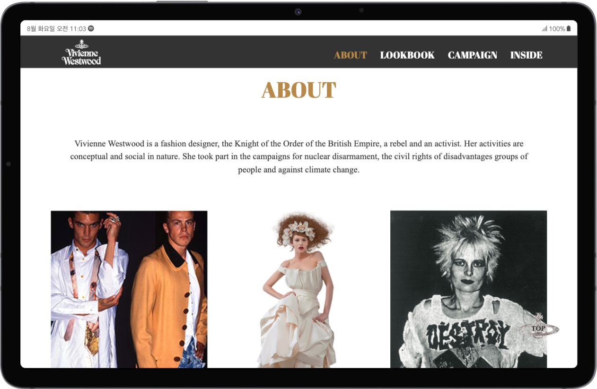
부트스트랩을 이용하여 보다 간편하게, 비비안웨스트우드 브랜드 이미지에 걸 맞는 디자인 및 레이아웃에 담아 구현하였습니다.
 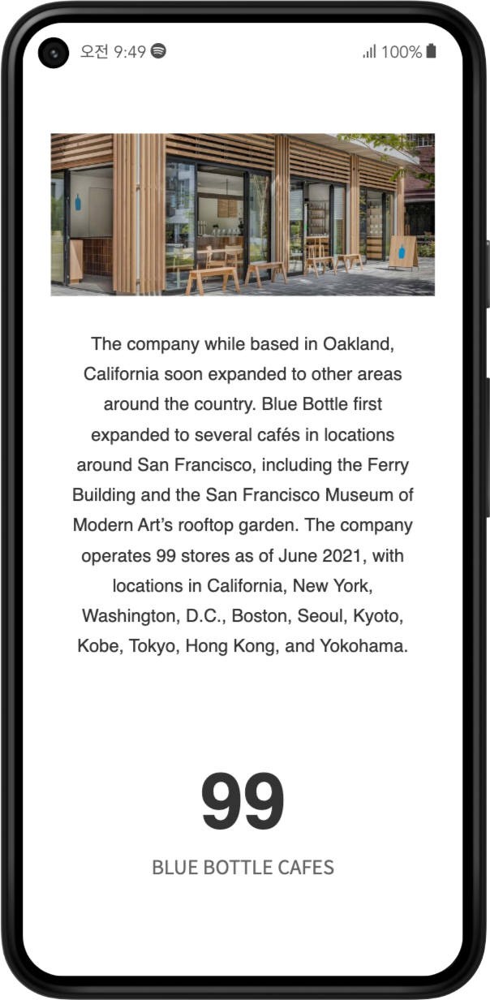
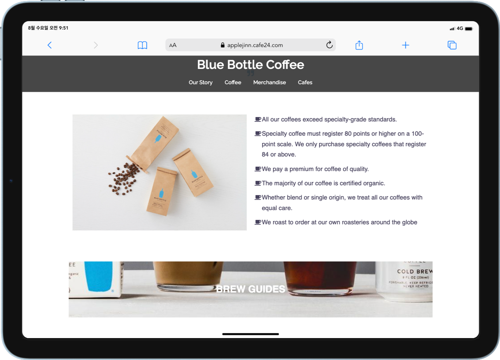
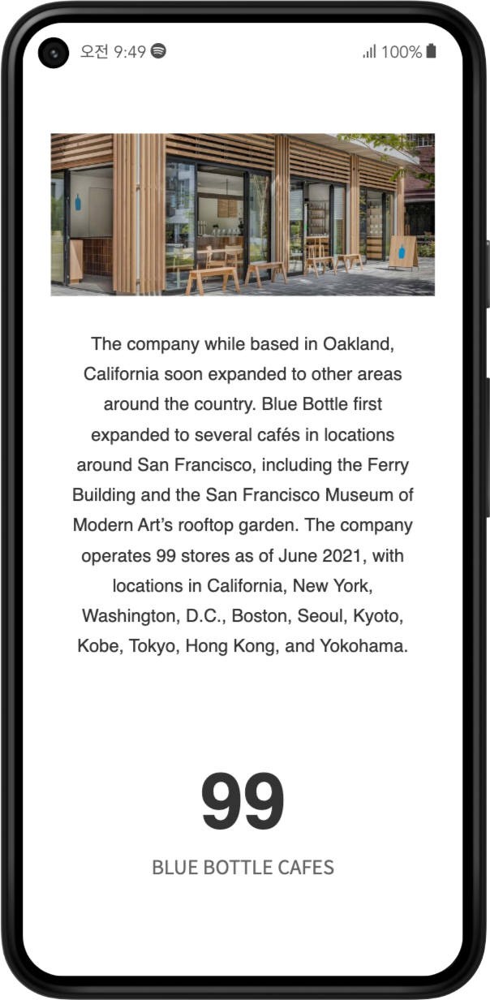
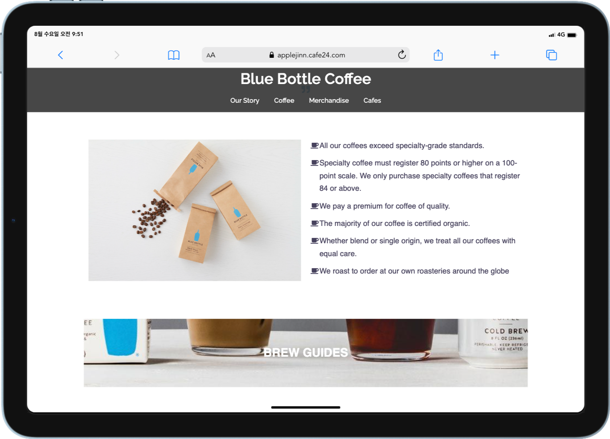
평소 좋아하는 커피 브랜드인 블루보틀을 워드프레스 사이트에서 접목해서 컨셉을 잡고 사이트를 제작하였습니다.